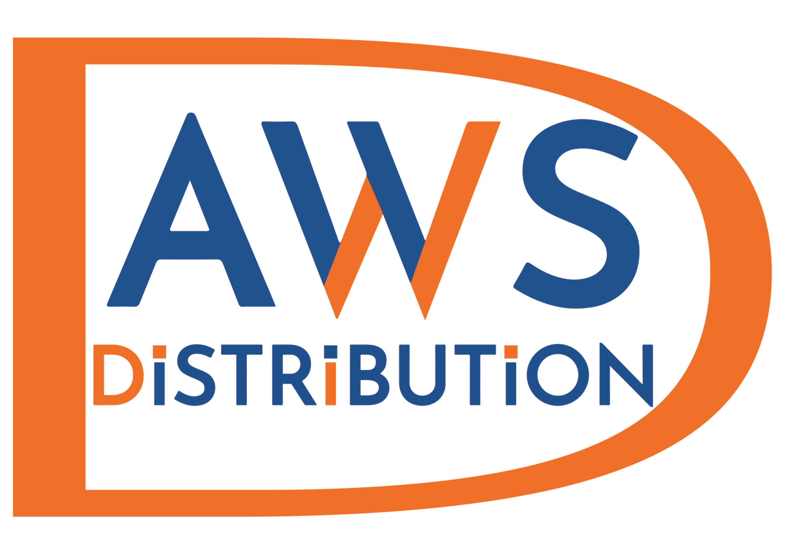

<mat-toolbar class="mat-elevation-z5" style=" background-color: #1F528E; height: 6%; color: white ">
  <mat-toolbar-row style="margin-top:20px">


    <!---->
    
    <label style="color:black;font-size:medium;font-weight:600;margin-left:1%;font-family:Calibri">MIS</label>
    <button mat-button style="color: white; font-size: medium; font-weight: 600; margin-left: 1%; font-family: Calibri" [routerLink]="['Dashboardreport']">Dashboard</button>
    <button mat-button style="color:white;font-size:medium;font-weight:600;margin-left:1%;font-family:Calibri" [routerLink]="['TaskList']">Task List</button>
    <button mat-button style="color:white;font-size:medium;font-weight:600;margin-left:1%;font-family:Calibri" [routerLink]="['marketresearch']">Market Research</button>
    <button mat-button style="color:white;font-size:medium;font-weight:600;margin-left:1%;font-family:Calibri" [routerLink]="['TaskList']">Task Page</button>

    <button mat-button style="color:white;font-size:medium;font-weight:600;margin-left:1%;font-family:Calibri" [routerLink]="['TaskdetailpageComponent']">Task Detail</button>
    <button mat-button style="color: white; font-size: medium; font-weight: 600; margin-left: 1%; font-family: Calibri" [routerLink]="['Shipment']">Shipment</button>
    <button mat-button style="color: white; font-size: medium; font-weight: 600; margin-left: 1%; font-family: Calibri">Reports</button>
    <span style="flex:auto"></span>

    <div class="icon" style=" float:right;margin-top:-1%">

      <button mat-mini-fab [matMenuTriggerFor]="menu" style="color: white; background-color: lightgrey ">
        <mat-icon style="height:auto;width:auto">perm_identity</mat-icon>
      </button>
      <mat-menu #menu style="background-color:white;color:gray">
        <button mat-menu-item style="background-color:white;color:gray; border:none" [routerLink]="'/login'">
          Logout
        </button>
      </mat-menu>
    </div>


  </mat-toolbar-row>


  <mat-toolbar-row>


  </mat-toolbar-row>


</mat-toolbar>
<style>
  .mat-elevation-z5 {
    position: relative;
    z-index: 3;
  }

  .flexExpand {
    justify-self: end;
  }

  .example-form {
    min-width: 250px;
    max-width: 900px;
    width: 100%;
    margin: 3rem 1rem
  }

  .example-full-width {
    width: 100%;
  }

  .my-input {
    border-radius: 5px;
    border: rgb(156, 156, 156);
    background-color: rgb(247, 247, 247);
    min-height: 1.5rem;
  }

  .search-icon {
    position: relative;
    right: 32px;
    top: 8px;
    width: 24px;
    height: 24px;
    font-size: 24px;
    color: dimgrey;
    cursor: pointer;
  }
</style>
<div style="height:95%;background-color:whitesmoke">

  <router-outlet></router-outlet>

</div>
